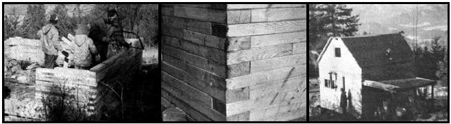
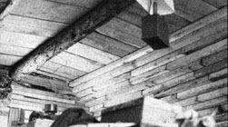
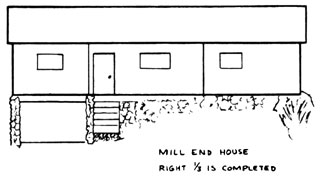
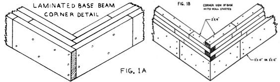
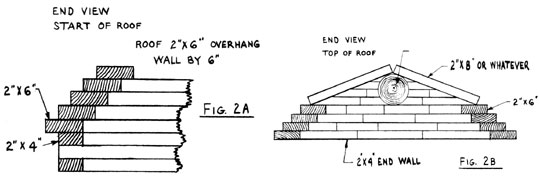
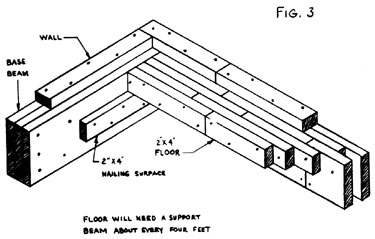

As New Directions Radio fans will recall from MOTHER NO. 27, a high point of Cop Macdonald's recent western trip was a visit to the home of fellow ham George Cummings, in the wilds of Washington. Well, George-it seems-is not only a radio freak but a dauntless amateur builder with a novel solution to low-cost homestead housing for a family of seven.
It finally happened! After more than twenty years of hearing how we ought to be living-on paid-for land, in a handwrought house, eating home-grown food-here we are! Still in the beginning stages, to be sure, but learning all the time . . . spending less and enjoying more. The fact that it took so long seems amazing but somehow irrelevant. Perhaps, for us, life truly did begin at forty.
A year ago it all seemed so remote. We had found our twenty acres by then, in northeastern Washington State, and had been paying on the land for almost a year. But we were still in the clutches of the 8-to-5 life in our Colorado mountain town: both of us working to buy beans for our ample family and fixing up an old house to resell at a modest profit for our stake . . . eventually.
And that's the rub! When is "eventually"? There's always something more to do on a house. What was worse, we both found our jobs interesting . . . and we still had five of our nine kids to raise.
For us, "eventually" was the summer of '73, when my husband just up and quit his job. August found him already in Washington, with an 8' X 10' Foxfire -type log cabin to his credit, and the problem of additional housing very much on his mind.
By fall, George had decided that being in Washington while the kids and I carried on in Colorado was no way for a family to live. On the other hand, seven of us spending the winter in an 8' X 10' space might be a little too much togetherness. What to do?
Experience had taught my husband that building a permanent log home for a bunch our size would be a very time-consuming job (and even then might give us a somewhat crude end result). A rock house, perhaps? Ideal on this windswept hill, but-again-nothing we could whip out just like that. Of course, either a log or a rock dwelling could be scaled down and added to later (that is, if we didn't mind a sort of Tinkertoy look about the additions). No, what we really needed was a method that would provide shelter within weeks, not months-for a minimum of dollars-and yet be right for us too.
The breakthrough came one day when George stopped in for a cup of coffee at the home of Tom Moore, a local TV serviceman for whom he'd done jobs to earn a little coin . . . and happened to notice the shed Tom's 80-year-old father-in-law had built for firewood.
For most wood-burning homes in these parts, "firewood" means mill ends . . . scraps of waste lumber from our area's many sawmills. When the mill has finished grading and drying the various cuts of timber, they're sawed to standard finished lengths. There's always a nickel's worth of wood left over: 21-inch 2 X 4's, 24-inch 2 X 6's, maybe 18-inch 2 X 8's and so on. These bits are dumped in a heap and are usually available to any picker who's willing to go in and stock up. They're all either kiln-dried or air-dried, and make great fuel.
Tom's father-in-law had found that mill ends also make a great woodshed, and in record time. The old gentleman had built the open-ended shelter in just one week. He simply laid one 2 X 4 beside another, in line like bricks . . . first one row, then another, nailing the courses together as he progressed.
Lights flashed and bells rang! George's enthusiasm fairly leaped off the pages of his letters as he wrote of his plans for a mill-end house. Support beams could be made by laminating 2 X 10's or 2 X 12's to the desired depth. The walls would be either four or six inches thick, depending on whether we decided to build with 2 X 4's or 2 X 6's (see Figs. 1A and 1B). We later settled on 2 X 4's since they were by far the most numerous. Because the structure would be self-supporting, style and size were limited only by imagination and the willingness to pound nails and lay wooden "bricks".
George's next letter contained a rough sketch of the proposed floor plan (nothing too outlandish . . . at that point we needed square footage more than cleverness). The house was to be constructed in modules one and a half stories high. The first unit would be the kitchen, with a bedroom upstairs. The next would contain a living area and another bedroom. Last would come a garage with a third bedroom above and food storage below, as dictated by the roll of the land (see the sketch). And-since the mill ends served equally well as interior or exterior walls-there would be no Tinkertoy effect about the finished building.
George's brainstorm meant that we could join him in Washington, roughing it in our 9' X 1 12' tent and the 8' X 10' cabin for a few weeks until the first module was enclosed. All that remained was to sell our house in Colorado, give notice at work, pack and leave. George stocked up on mill ends, stored them at the building site and came home to help with culling out, selling out and loading up.
We arrived in Washington on November 1 . . . just three days before a 12-inch snowfall heralded the wettest November on record for the northeastern corner of the state. Our only vehicle was a 1970 VW bus, which we eventually outfitted with snow tires and chains. Providence smiled, however, and during the next two months-whenever it was really necessary to tote building supplies, food, clothes or whatever up our 2-1/2-mile uphill road-the job got done. The purchase of an old single-ski, double-track, geared-down Ski-Doo increased our mobility.
Building was begun immediately, weather or not. George and our 16-year-old son pounded nails and laid 2 X 4 bricks, the two younger boys sorted mill ends and handed up tools and did the "step and fetchit" chores necessary to construction. Even our eight-year-old daughter helped tote rocks for the foundation, while her 14-year-old sister and I did mess-hall duty and other chores as needed.
We were careful to stagger the joints of the "blocks" for maximum strength, and we're great believers in square corners and proper leveling. Nevertheless, the actual construction went swiftly. What took time was driving to the mill yards, stocking up with materials and hauling them back to our place (a round trip of 25 to 35 miles, depending on which mill George picked).
A few supplies other than mill ends also had to be rounded up. We managed to find a small number of wooden sash windows (not so easy in this aluminum-smitten world), and elected to buy one-inch stock for the upstairs floor and 2 X 10's for ceiling joists between stories. Except for a large amount of 16-penny nails and five rolls of roofing, these were the only items we purchased.
Almost before we knew it, we were ready to put on a roof. Its design was based on something called a "lion's arch". The gables were formed from 2 X 6 mill ends nailed end to end as in the rest of the house . . . only the second row was recessed two inches, the next another two inches, and so forth. Seen from the end of the house, the effect was something like steps (Fig. 2A). The ceiling joists were placed edgewise on the outside walls, and the 2 X 4 wall continued around them and upward for another foot and a half. Then we began on the 2 X 6 roof
We'd originally intended to stairstep the 2 X 6's until they met at the middle along a sturdy log ridgepole. Soon, however, advancing winter weather-and the decision of the largest mill yard to discontinue free access to mill ends-called for a revised roof design. We ended up enclosing the last 21 inches on either side of the ridgepole with 2 X 12's which connected the final row of 2 X 6's to the beam and completed the arch (Fig. 213). Then roofing paper was nailed right on the mill ends and up over the top, and the joints were sealed with tar. We're very happy with our modified gambrel roofline, a shape we like better than the conventional gable.
The downstairs floor was constructed just like the walls, except that we set the 2 X 4's edgewise. This is a time-consuming method and uses many nails, but it gives a sturdy result that looks like hardwood flooring (Fig. 3).
We were able to move into the first two-story module by December 17. What a great Christmas! Repeated snowstorms, thaws, rain and thunderous winds had made tent living somewhat tedious . . . and the 8' X 10' cabin had served its purpose well but was-to say the least-somewhat cozy. The first thing the children did in our new home was to stand in the middle of the room, arms outstretched, whirling around and exclaiming their joy at not running into anything.
When we sat down to the final reckoning, we discovered that our livable, two-room, 550-square-foot dwelling had cost us in the neighborhood of $200-paid as we went-plus the gas used to haul up the mill ends. Over the next couple of months, of course, we added a few things: bookshelves made from 1 X 12 mill ends, a six-foot kitchen workspace and a heavy homemade door with a Colonial-type latchstring clasp holding it closed. Sixteen-year-old Cary built a porch and step from one-inch mill ends and logs he felled himself.
Moving time marked the end of our building program for the winter, since by then we were faced with 18 inches of snow and-in January-several weeks of below-zero weather. The next two modules would have to wait until spring, when we could tackle the extensive foundation work for our second unit (the first sits right on bedrock).
Meanwhile, our wood-burning range kept us toasty warm through the fuel oil shortages and our Aladdin lamp and 12-volt electrical system gave us light in the midst of power outage reports. George's ham rig and a small CB radio were our links with parts of the outside world. Trips to the local market were still unavoidable, but much less nerve-racking than they used to be. We mailed our substantial seed order and promised ourselves that-by the following winter-home-grown food would also be part of our dream-come-true existence.
So we've been living-in a very full sense of that word-on our paid-for land, in our handwrought house. Mill-end building is one more way to realize a lot of independence with a little bit of cash. Give it a try!
|
 PHOTOS FROM LEFT. Three of the Cummings family rush to get their house up before %inter sets in, a detail of one corner of the building, the completed first section of the home and a view of the structure's interior. |
 |
 |
|
 |
 |
 |